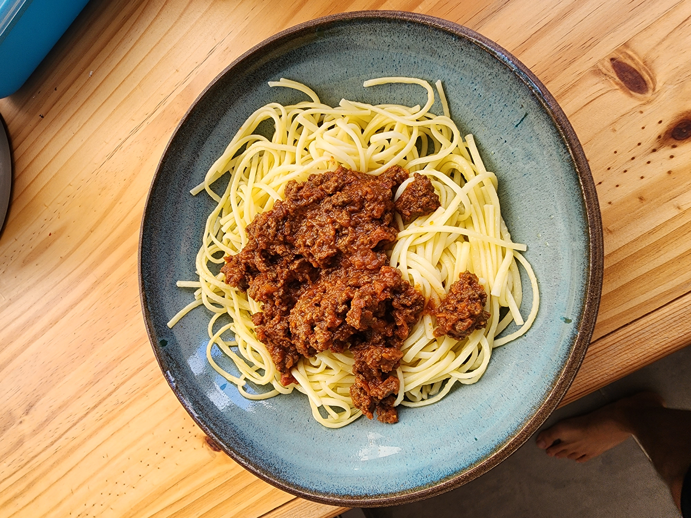
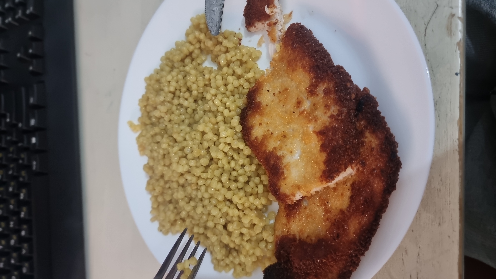

דף הבית
ספר המתכונים של סבתא
קישורים נוספים
ספר המתכונים שלי
כאן אפשר למצוא את כל המתכונים של המשפחה להוספת מתכונים ניתן ליצור קשר
 
עיקריות
אורז עם שעועית וגזר
בולונז
קציצות של אמא
פסטה עם חזה עוף בתיבול מזרחי
מוקפץ עם סלמון וברוקולי
חזה עוף בפפריקה
שניצלים
תוספות
אורז פרסי לבן
פתיתים
מג'דרה
קינוחים
בראוניז
קרם ברולה של רותם
“Cooking is like painting or writing a song. Just as there are only so many notes or colors, there are only so many flavors - it’s how you combine them that sets you apart.”
- Wolfgang Puck